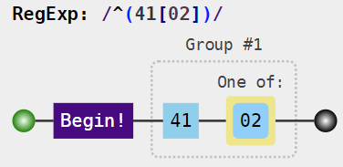
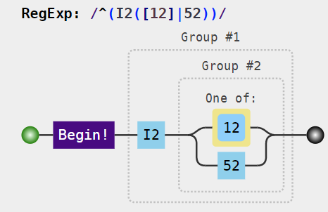

library(coder)
Classification is implemented by classcodes objects with regular expressions identifying different groups. Default classcodes object included in the package are:
all_classcodes()$classcodes #> [1] "charlson" "cps" "elixhauser" "hip_ae" #> [5] "hip_ae_hailer" "knee_ae" "rxriskv"
We will have a closer look at one of those objects, charlson, to exemplify its content. The object is basically a data frame …
| group | description | regex_icd10 | regex_icd9cm_deyo | regex_icd9cm_enhanced | regex_icd10_rcs | regex_icd8_brusselaers | regex_icd9_brusselaers | index_charlson | index_deyo_ramano | index_dhoore | index_ghali | index_quan_original | index_quan_updated |
|---|---|---|---|---|---|---|---|---|---|---|---|---|---|
| myocardial infarction | Acute myocardial infarction. Old myocardial infarction. | I2([12]|52) | 41[02] | 41[02] | I2([1-3]|52) | 41[0-2] | 41[02] | 1 | 1 | 1 | 1 | 1 | 0 |
| congestive heart failure | Heart failure. | I(099|1(10|3[02])|255|4(2[05-9]|3)|50)|P290 | 428 | 39891|4(0(2([01]1|91)|4([019][13]))|2(5[4-9]|8)) | I(1[13]|255|4[23]|5(0|17)) | 4270|428 | 4(02|2[589]) | 1 | 1 | 1 | 4 | 1 | 2 |
| peripheral vascular disease | Peripheral vascular disease, incl. intermittent claudication. Aortic aneurysm. Gangrene. Blood vessel replaced by prosthesis. Resection and replacement of lower limb arteries. | I7([01]|3[189]|71|9[02])|K55[189]|Z95[89] | 44(39|1)|7854|V434 | 0930|4(373|4[01]|3[1-9]|471)|557[19]|V434 | (I7([0-3]|7[01]))|K55[189]|R02|Z95[89] | 44[0-5] | 44[0-7]|785E|V43D | 1 | 1 | 1 | 2 | 1 | 0 |
… with some additional attributes:
attributes(charlson) #> $names #> [1] "group" "description" "regex_icd10" #> [4] "regex_icd9cm_deyo" "regex_icd9cm_enhanced" "regex_icd10_rcs" #> [7] "regex_icd8_brusselaers" "regex_icd9_brusselaers" "index_charlson" #> [10] "index_deyo_ramano" "index_dhoore" "index_ghali" #> [13] "index_quan_original" "index_quan_updated" #> #> $row.names #> [1] 1 2 3 4 5 6 7 8 9 10 11 12 13 14 15 16 17 #> #> $class #> [1] "classcodes" "tbl_df" "tbl" "data.frame" #> #> $regexprs #> [1] "regex_icd10" "regex_icd9cm_deyo" "regex_icd9cm_enhanced" #> [4] "regex_icd10_rcs" "regex_icd8_brusselaers" "regex_icd9_brusselaers" #> #> $indices #> [1] "index_charlson" "index_deyo_ramano" "index_dhoore" #> [4] "index_ghali" "index_quan_original" "index_quan_updated"
tech_names in set_classcodes).regex_ (also found by attr(charlson, "regexprs")) specify different versions of group identification based on regular expressions (see ?charlson for details). Those regular expressions only identifies individual codes but this can be controlled further by arguments start and stop to set_classcodes.index_ (also found by attr(charlson, "indices")) are numeric variables used as weights when calculating index sums based on all (or a subset of) individual groups.?hip_ae).Some classcodes objects (see for example ?elixhauser) might have an additional class attribute “hierarchy”, controlling hierarchical groups where only one of possibly several groups (occurring simultaneity) should be recognized for calculation of a weighted index sum.
Regular expressions might be difficult to interpret but can be visualized by visualize(). This will usually display a web page in the default browser (here suppressed by show = FALSE):
url <- visualize(charlson, show = FALSE, regex = "regex_icd10")
Here, we can open the url “manually” by a link to the JavaScript Regular Expression Parser & Visualizer. The displayed visualization is rather complex, however, wherefore a further simplification might be needed before actual understanding of the concept. We can chose to inspect the regular expression for myocardial infarction as codified by regex_icd9cm_deyo:
visualize( charlson, group = "myocardial infarction", show = FALSE, regex = "regex_icd9cm_deyo" )

Here ^ indicates the beginning of the character string, followed by a literal 41 and either a 0 or 2. The corresponding code according to ICD-is:
visualize( charlson, group = "myocardial infarction", show = FALSE, regex = "regex_icd10" )

Such code starts with I2 followed by either 1, 2 or 52 and where | indicates a logical “or” within the parenthesis (as used for expressions longer than single characters).
An alternative representation is to list all relevant codes identified by each regular expression. This is implemented by the summary method for classcodes objects. (We here use the print method with n = 30 to fit the output to the width of the vignette.)
print( summary(charlson, coding = "icd10cm"), n = 30 ) #> Classification based on: regex_icd10 #> Indices: index_charlson, index_deyo_ramano, index_dhoore, index_ghali, index_quan_original, index_quan_updated #> #> Recognized codes per group: #> #> group n codes #> AIDS/HIV 1 B20 #> cerebrovascular disease 430 G450, G451, G452, G453, G454, ... #> chronic pulmonary disease 69 I2781, I2782, I2783, I2789, I2 ... #> congestive heart failure 36 I099, I110, I130, I132, I255, ... #> dementia 11 F0150, F0151, F0280, F0281, F0 ... #> diabetes complication 204 E1021, E1022, E1029, E10311, E ... #> diabetes without complication 52 E1010, E1011, E10610, E10618, ... #> hemiplegia or paraplegia 45 G041, G114, G801, G802, G8100, ... #> malignancy 961 C000, C001, C002, C003, C004, ... #> metastatic solid tumor 47 C770, C771, C772, C773, C774, ... #> mild liver disease 38 B180, B181, B182, B188, B189, ... #> moderate or severe liver disease 14 I8500, I8501, I864, K7040, K70 ... #> myocardial infarction 18 I2101, I2102, I2109, I2111, I2 ... #> peptic ulcer disease 36 K250, K251, K252, K253, K254, ... #> peripheral vascular disease 274 I700, I701, I70201, I70202, I7 ... #> renal disease 28 I120, I1310, I1311, N032, N033 ... #> rheumatic disease 348 M0500, M05011, M05012, M05019, ... #> #> Use function visualize() for a graphical representation.
Even with individual codes summarized, those might still be hard to interpret on their own. The decoder package can help to translate codes to readable names/description. This is facilitated by the codebook function. The main purpose of the function is to export an Excel-file (if path specified by argument file). The output is otherwise a list, including both a summary table (described above) and a data frame “all_codes”:
knitr::kable( head(codebook(charlson, "icd10cm")$all_codes) ) #> Classification based on: regex_icd10
| code | description | group |
|---|---|---|
| B180 | Chronic viral hepatitis B with delta-agent | mild liver disease |
| B181 | Chronic viral hepatitis B without delta-agent | mild liver disease |
| B182 | Chronic viral hepatitis C | mild liver disease |
| B188 | Other chronic viral hepatitis | mild liver disease |
| B189 | Chronic viral hepatitis, unspecified | mild liver disease |
| B20 | Human immunodeficiency virus [HIV] disease | AIDS/HIV |
Here, the descriptions are based on the ICD-10-CM codes from 2020. Corresponding descriptions in Swedish are retrieved by (icd10se instead of icd10cm):
knitr::kable( head(codebook(charlson, "icd10se")$all_codes) ) #> Classification based on: regex_icd10
| code | description | group |
|---|---|---|
| B180 | Kronisk (virus)hepatit B med hepatit D (coinfection) | mild liver disease |
| B180A | Kronisk hepatit B med hepatit D (coinfection), normal lever | mild liver disease |
| B180B | Kronisk hepatit B med hepatit D (coinfection), ospecifik reaktiv hepatit | mild liver disease |
| B180C | Kronisk hepatit B med hepatit D (coinfection), kronisk persisterande hepatit (KPH) | mild liver disease |
| B180D | Kronisk hepatit B med hepatit D (coinfection), kronisk aktiv hepatit (KAH) | mild liver disease |
| B180E | Kronisk hepatit B med hepatit D (coinfection), kronisk aktiv hepatit med cirros | mild liver disease |
Examples above use the default regex column (currently ICD-10). If we are interested in another version, for example specified by Deyo et al based on ICD-9-CM, this can be specified by the regex-argument passed by the cc_args argument to the set_classcodes function. Simultaneously, the coding argument is set to icd9cmd to match the regular expressions to the disease part of ICD-9-CM classifikcation.
print( summary( charlson, coding = "icd9cmd", cc_args = list(regex = "regex_icd9cm_deyo") ), n = 30 ) #> Indices: index_charlson, index_deyo_ramano, index_dhoore, index_ghali, index_quan_original, index_quan_updated #> #> Recognized codes per group: #> #> group n codes #> AIDS/HIV 1 042 #> cerebrovascular disease 69 430, 431, 4320, 4321, 4329, 43 ... #> chronic pulmonary disease 8 490, 500, 501, 502, 503, 504, ... #> congestive heart failure 15 4280, 4281, 42820, 42821, 4282 ... #> dementia 14 2900, 29010, 29011, 29012, 290 ... #> diabetes complication 12 25040, 25041, 25042, 25043, 25 ... #> diabetes without complication 20 25000, 25001, 25002, 25003, 25 ... #> hemiplegia or paraplegia 13 34200, 34201, 34202, 34210, 34 ... #> malignancy 628 1400, 1401, 1403, 1404, 1405, ... #> metastatic solid tumor 30 1960, 1961, 1962, 1963, 1965, ... #> mild liver disease 7 5712, 57140, 57141, 57142, 571 ... #> moderate or severe liver disease 6 4560, 4561, 5722, 5723, 5724, ... #> myocardial infarction 31 41000, 41001, 41002, 41010, 41 ... #> peptic ulcer disease 72 53100, 53101, 53110, 53111, 53 ... #> peripheral vascular disease 15 44100, 44101, 44102, 44103, 44 ... #> renal disease 26 5820, 5821, 5822, 5824, 58281, ... #> rheumatic disease 8 7100, 7101, 7104, 7140, 7141, ... #> #> Use function visualize() for a graphical representation.
Some functions do not use the classcodes object themselves, but a modified version passed through the set_classcodes function. This function can be called directly but is more often invoked by arguments passed by the cc_args argument used in other functions (as exemplified above).
We can modify the charlson classcodes object as follows:
charlson_icd8 <- set_classcodes( "charlson", regex = "regex_icd8_brusselaers", # Version based on ICD-8 start = FALSE, # Codes do not have to occur in the beginning of a vector stop = TRUE, # Code vector must end with the specified codes tech_names = TRUE # Use long but unique and descriptive variable names )
The resulting object has only one regex-column. It is based on “regex_icd8_brusselaers” but suffixed with $ (due to stop = TRUE). Group names might seem cumbersome but this will help to distinguish column names added by categorize if this function is run repeatedly with different classcodes. The original charlson object had 17 rows, but charlson_icd8 has only 13, since not all groups are defined by that version.
| group | regex | |
|---|---|---|
| 1 | charlson_regex_icd8_brusselaers_myocardial_infarction | (41[0-2])$ |
| 2 | charlson_regex_icd8_brusselaers_congestive_heart_failure | (4270|428)$ |
| 3 | charlson_regex_icd8_brusselaers_peripheral_vascular_disease | (44[0-5])$ |
| 4 | charlson_regex_icd8_brusselaers_cerebrovascular_disease | (43[0-8])$ |
| 5 | charlson_regex_icd8_brusselaers_dementia | (290[01])$ |
| 6 | charlson_regex_icd8_brusselaers_chronic_pulmonary_disease | (49[0-3]|51[5-8])$ |
| 7 | charlson_regex_icd8_brusselaers_rheumatic_disease | (7(1[0-2]|34))$ |
| 11 | charlson_regex_icd8_brusselaers_hemiplegia_or_paraplegia | (344)$ |
| 12 | charlson_regex_icd8_brusselaers_renal_disease | (40[34]|58[0-3]|792)$ |
| 13 | charlson_regex_icd8_brusselaers_diabetes_complication | (250)$ |
| 14 | charlson_regex_icd8_brusselaers_malignancy | (1([4-68][0-9]|7[0-24-9]|9[0-4])|20[0-7])$ |
| 15 | charlson_regex_icd8_brusselaers_moderate_or_severe_liver_disease | (070|4560|51[1-3])$ |
| 16 | charlson_regex_icd8_brusselaers_metastatic_solid_tumor | (19[6-9])$ |
Note that all indices columns remain (although not showed above):
names(charlson_icd8) #> [1] "group" "description" "index_charlson" #> [4] "index_deyo_ramano" "index_dhoore" "index_ghali" #> [7] "index_quan_original" "index_quan_updated" "regex"
It is thus possible to combine any categorization with any index, although some combinations might be preferred (such as regex_icd9cm_deyo combined with index_deyo_ramano).